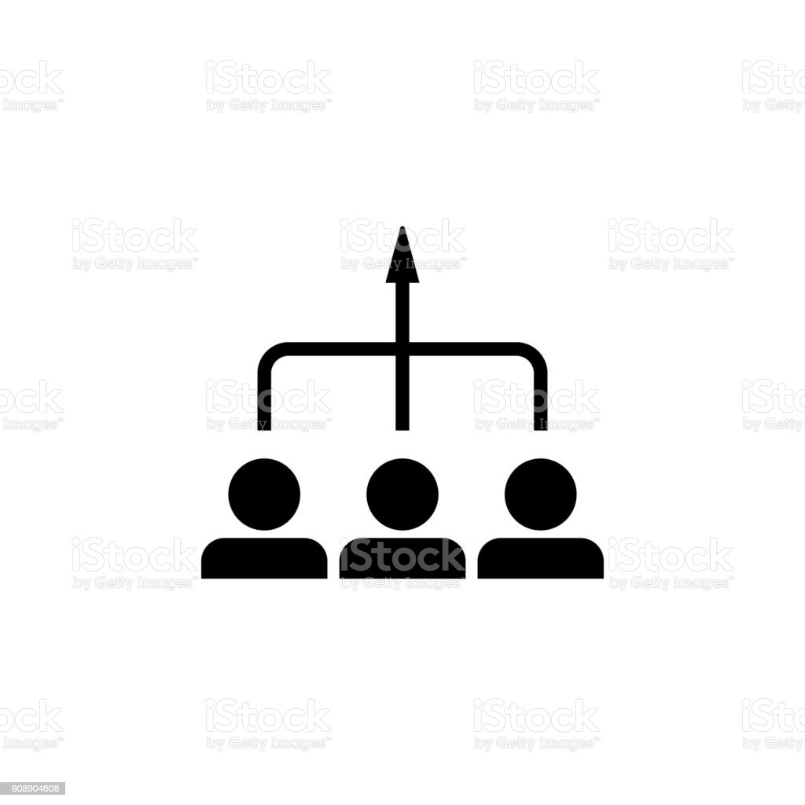
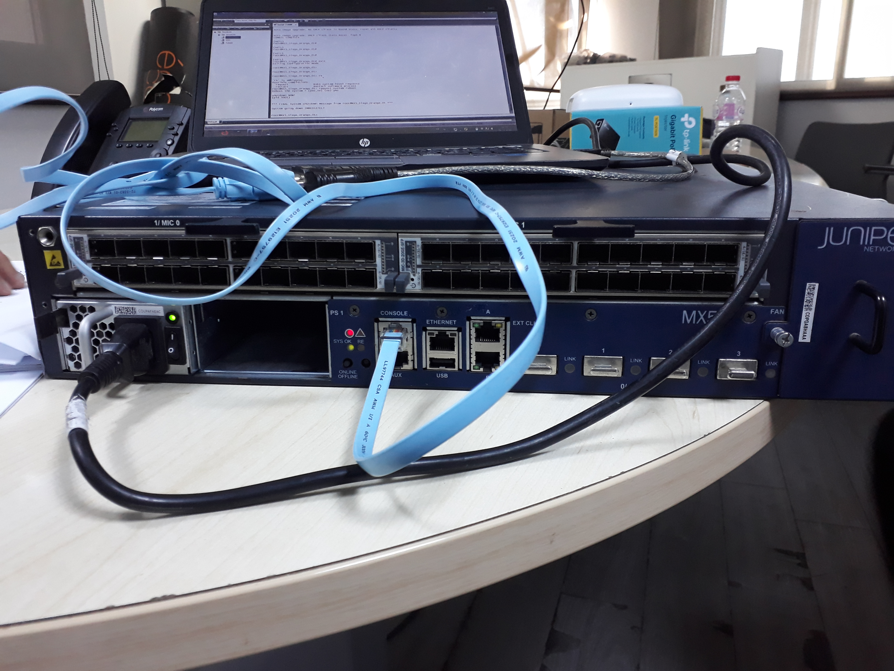
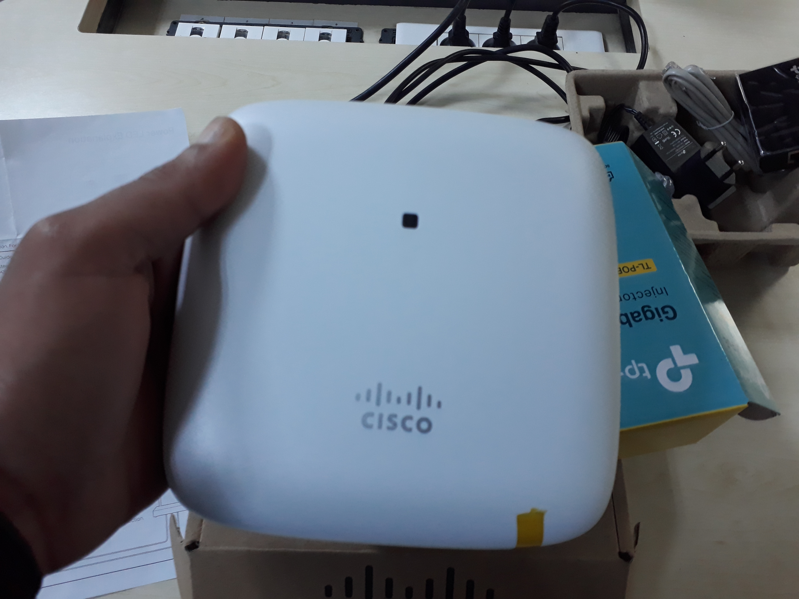
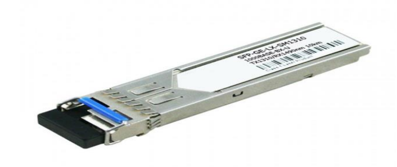
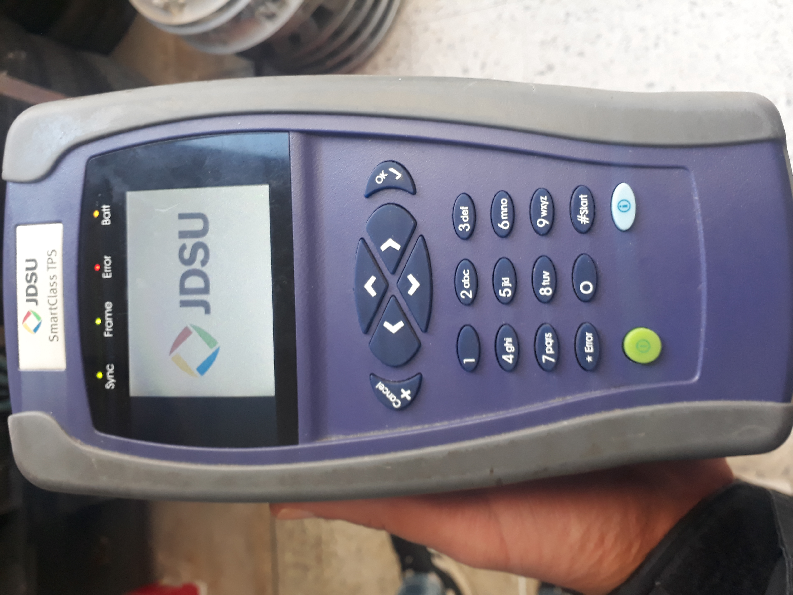

directeur generale
: didier charvet
capital
: 31 335 600 000 dinars tunisiens
siege :
: centre urbain nord tunis 1003
site web
: orange.tn
activité
: Orange Tunisie est un operateur prive de telecomunictaion base en tunisie en 2011
Orange tunisie se compose de differnts departements
- direction generale
- 
- direction resources humaines
- direction reseaux et services
- direction devlopement et recherches
- direction marketing
infrastructure informatique


au cours de ce stage j'ai eu la chance de découvrir une infrastructure trés devlopé :

Un concentrateur (hub) est un boîtier chargé d'acheminer les données d'un ordinateur à un autre.

un routeur mx de la marque juniper permettant de l'utiliser avec les clients B2B
les types des routeurs mx :
un routeur cisco genere une connexion WIFI dedié por les clients B2B
Il permet d'interconnecter l'interface de la carte mère d'un équipement réseau (par ex., un switch, un routeur, un convertisseur de média, etc.) à une fibre optique ou à un câble en paires de cuivre.
appareil de messure pour les clients ADSL :
Relation Entre Differnts Departements :
les client orange passe les reclamations sur le
numero 1150 tous ces reclamations passe par la direction de
reseaux et services
qui organise le travail de departement intervention ou j'ai passe ce stage
numero 1150 tous ces reclamations passe par la direction de
reseaux et services
qui organise le travail de departement intervention ou j'ai passe ce stage